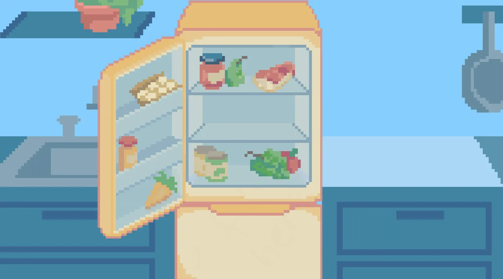

The fridge

1 · Scan the fridge
📱 Phone mode: snap your fridge here. The ingredients will show up on your laptop too.
Tap the camera (or the button below), take a clear photo of your open fridge, then scan it.
2 · Review the ingredients
Remove anything the scan got wrong, and add anything it missed.
Nothing here yet. Scan your fridge, or type ingredients in below.